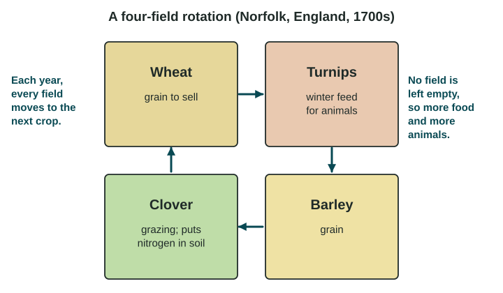

In 1750, most people in Britain worked on farms. By 1900, most did not, yet the country ate better than ever. A set of changes in how farms worked, called the Second Agricultural Revolution, made that possible.
What changed
The Second Agricultural Revolution was a period of new farming methods and machines that began in Britain and western Europe in the 1700s and spread to North America in the 1800s. It happened alongside the rise of factories, and each fed the other. Its main changes:
- Crop rotation. In the old system, a third of the land rested empty each year. In the Norfolk four-field rotation, a farm moved each field through wheat, turnips, barley and clover. Turnips fed animals in winter, and clover added nitrogen to the soil, so no field sat idle.
- Selective breeding. Farmers such as Robert Bakewell bred sheep and cattle for more meat and wool.
- Enclosure. Landowners fenced shared village fields and commons into private farms. Larger farms could try new methods, but many small farm families lost their land.
- New tools and machines. The seed drill (Jethro Tull, 1701) planted seeds in neat rows. The steel plow (John Deere, 1837) cut the tough soils of the US prairies. The horse-drawn reaper (Cyrus McCormick, 1831) cut grain many times faster than workers with hand tools. Replacing human and animal labor with machines is called mechanization.
- Later inputs. By the late 1800s and early 1900s, railroads and refrigerated cars moved food long distances, and factories made fertilizer. Some textbooks place these at the end of this revolution.

Effects: more food, fewer farmers
The revolution changed people and places at several scales.
- More food from fewer workers. Output per farm worker rose sharply. In the United States, 41% of workers were in farming in 1900 and only 1.9% in 2000 (USDA Economic Research Service, 2005), yet the country grew far more food.
- Better diets and longer lives. More grain, meat and milk improved nutrition. Death rates fell, which helped Britain's population grow quickly: in the language of the demographic transition model, the change helped move Britain into stage 2.
- People moved to towns. Machines and enclosure meant farms needed fewer hands. Rural families moved to towns and cities, where growing factories needed workers. Fewer farm jobs pushed people from the countryside; factory jobs pulled them to towns.
- Bigger, more specialized farms. Farmers who could buy machines worked more land and grew more for sale. Those who could not often sold out.
| Before (early 1700s, England) | After (late 1800s, England and the US) | |
|---|---|---|
| Field use | One field in three left empty each year | Rotation keeps every field producing |
| Power | People, oxen, horses | Horse-drawn machines, then steam and early tractors |
| Who farms | Most of the population | A shrinking share of workers |
| Where people live | Mostly villages | A growing share in towns and cities |
Reading the change at different scales
At the national scale, Britain's share of farm workers fell for more than a century. Inside Britain, at the local (subnational) scale, change was uneven: grain lands that could use reapers mechanized first, while hilly areas changed more slowly. At the global scale, most farmers in Asia, Africa and Latin America did not use these machines until the 1900s, and many small farms still rely mostly on hand labor. The Second Agricultural Revolution was a change in some places, not everywhere at once.